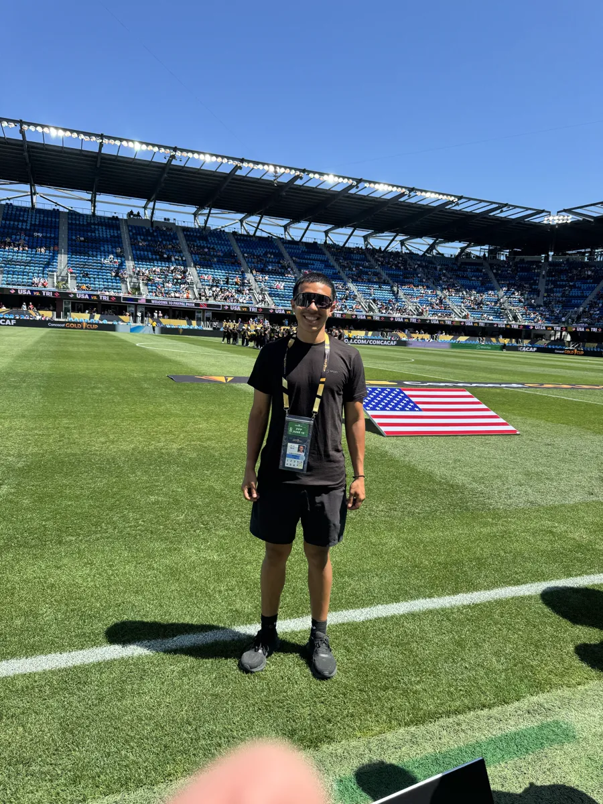
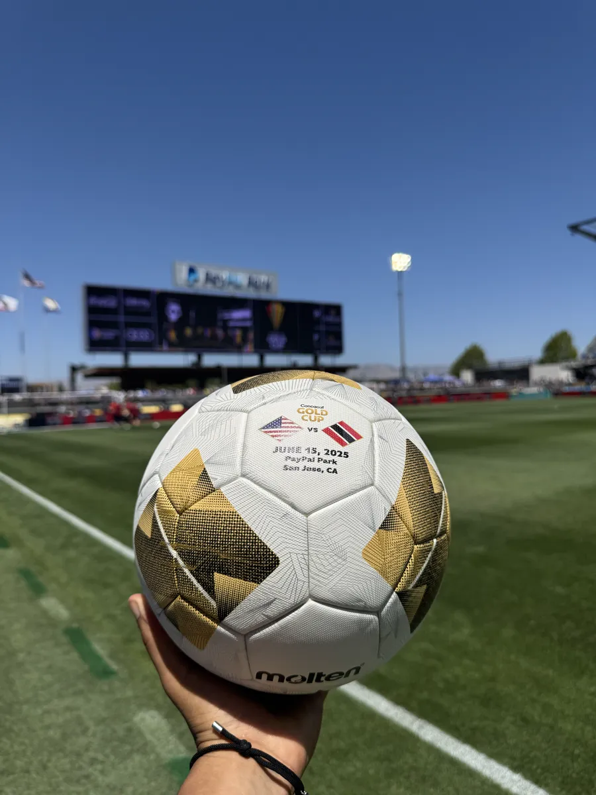
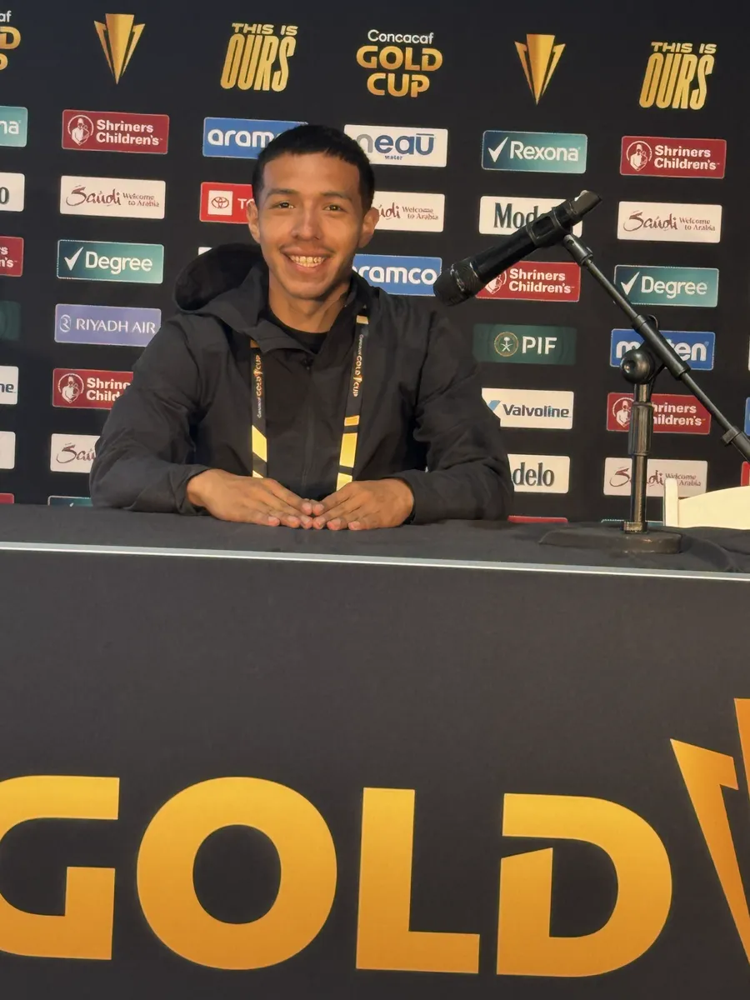
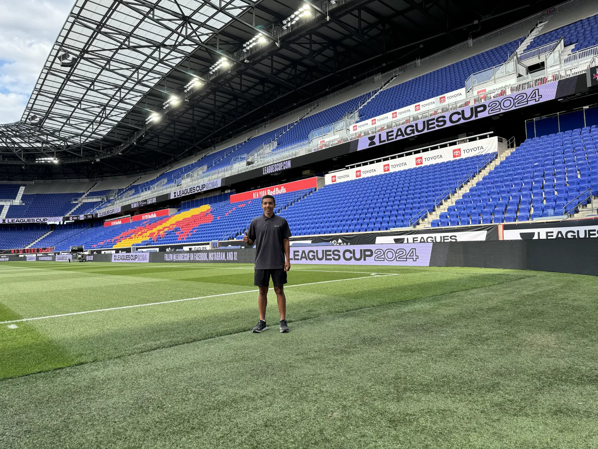
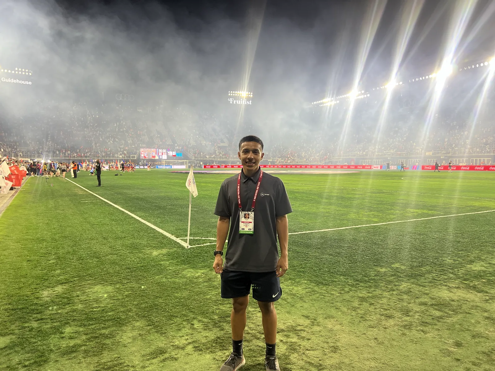
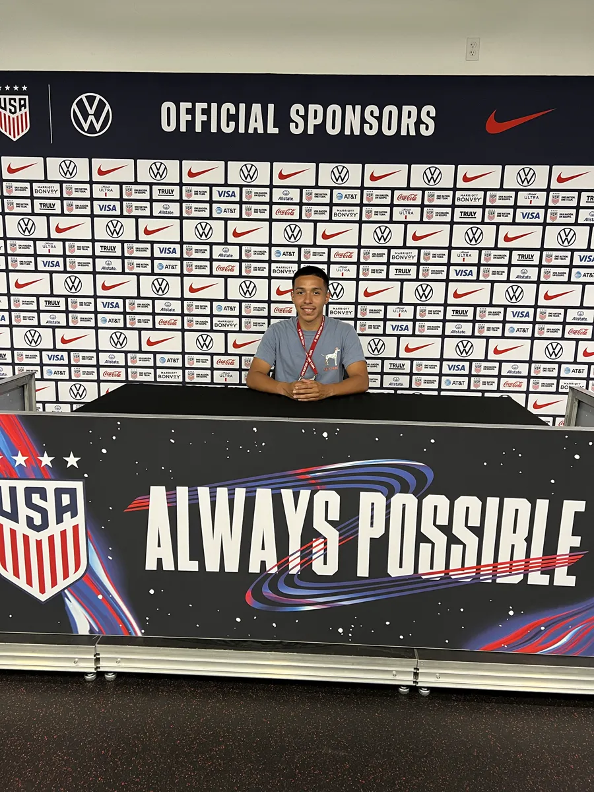
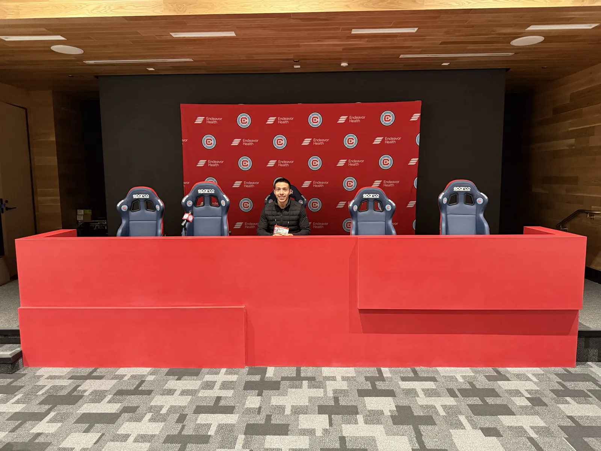
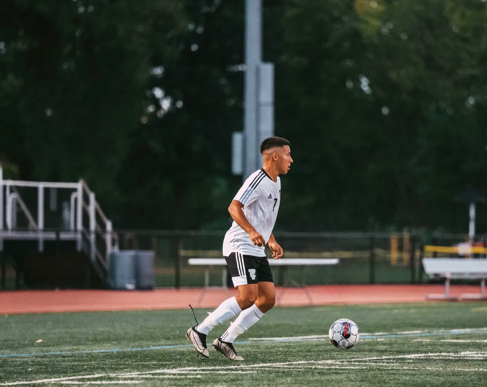

Finance major at Roosevelt University. I build financial models for restaurant projects at Hats Off Hospitality in Chicago, and I spent two summers on event operations for Gold Cup, Copa América and MLS All-Star.
I'm a finance major with hands-on FP&A-style experience: building financial models and pro formas, tracking budgets and forecasts, and checking actuals against plan and against benchmarks.
I work directly with ownership and project leaders, and turn the numbers into recommendations for budgeting and vendor decisions. I learned operations on matchdays, working event delivery for international soccer tournaments. I speak English and Spanish.
Based in
Chicago, Illinois
Studying
B.S. Finance, Roosevelt University, expected May 2027
Current role
Financial Analyst Assistant, Hats Off Hospitality
Languages
English and Spanish
Work
Hats Off Hospitality
Financial Analyst Assistant
June 2026 to present. Chicago.
I build and maintain the Excel models and pro formas behind 2+ active restaurant projects, and work as the finance partner to project management and ownership.
Results at Hats Off Hospitality
Annual operating costs behind the budgeting decisions
$2M+
Scope of the projects I present analysis on
$500K to $3M
Comparable locations benchmarked to flag cost trends
12+
Lower monthly expenses after two vendor renegotiations
about 6%
Misallocated vendor draws and expenditures found and resolved
$15K+
Warning on a working capital shortfall before a vendor payment cycle
2 weeks
Monthly reconciliations run in Excel and QuickBooks. Cash flow tracked across 2+ restaurant locations.
TGI Sport
Account Manager Intern, 2025. Project Management and Operations Intern, 2024.
May to August, both summers. Chicago.
Two summers on event delivery for international soccer: Gold Cup, Copa América, MLS All-Star and Premier League events, plus U.S. Men's National Team and Mexico National Team matches.
2025, Account Manager Intern
Tracked budgets and financial performance across 10+ client accounts at once, with 95%+ of deliverables on time.
Coordinated logistics and on-site setups across Gold Cup host cities, alongside Concacaf staff.
Caught a budget overrun early enough to keep one account within 3% of its financial plan.
Bilingual English and Spanish liaison for about 20% of the client portfolio.
2024, Project Management and Operations Intern
Cost-efficient delivery of 3,500+ branding and operational elements under strict deadlines.
Budgeting and cost tracking across 6+ projects, with 90%+ of tracked line items inside approved budgets.
Trackers for timelines, costs and deliverables on a portfolio worth about $1.5M.
Worked with 4+ vendors and internal teams to keep two projects on deadline through scope changes.
Around the game

PayPal Park, San Jose. Gold Cup, USA v Trinidad and Tobago, June 15, 2025.

The match ball for that game.

Gold Cup press conference room.

Red Bull Arena. Leagues Cup 2024.

Pitchside at a U.S. Soccer match.

U.S. Soccer press conference room.

Chicago Fire press conference room.
Education
Roosevelt University, Chicago
B.S. Finance, expected May 2027
Analyst in the Roosevelt Investment Club: investment research, fundamental analysis and a student-led portfolio simulation.
NCAA Division II men's soccer, student-athlete.
Skills
Financial analysis
Financial modeling, pro forma analysis, budgeting and forecasting support, variance and benchmarking analysis, cash flow analysis, financial statement analysis, reconciliations, investment research.
Tools
Microsoft Excel, QuickBooks, Toast, Microsoft Office.
Languages
English and Spanish.

Played college soccer.Won an NCAA ring.
NCAA Division II student-athlete on the Roosevelt University men's soccer team, carrying a full course load next to the training and competition schedule.
Coaching
Head Soccer Coach, ComEd Youth Soccer Program
2020 to 2023
Grew the recreational program from about 300 players to 600. Built its structure, schedules and training systems, and helped hire, onboard and manage the coaching staff.
Youth Soccer Coach, Intentional Sports
2024 to present
I coach recreational and club teams at the non-profit, and help build, organize and run its leagues and tournaments.